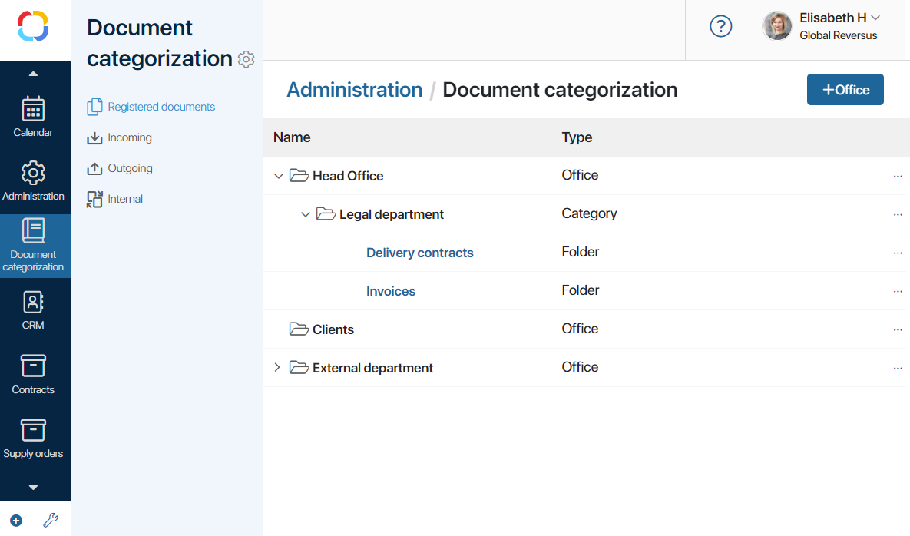
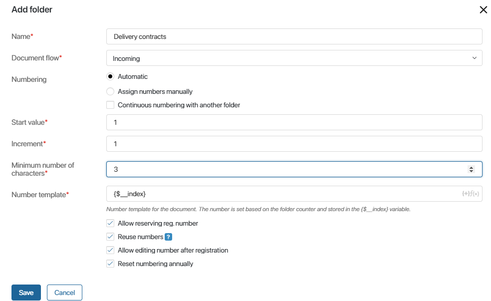

Document categorization implements a hierarchy for record keeping and document registration. Registered documents are displayed in the system in accordance with this hierarchy. Users cannot register documents unless the hierarchy is set up.
Document categorization consists of offices that contain categories and folders. The image below shows an example of a set up hierarchy:

Set up registration
Registration of Document type apps is configured in several steps:
- Create document categorization by adding offices, categories and folders.
- Set up folders with individual registration settings. For example, you can specify if documents are registered manually or automatically, specify the document flow and registration number template, enable number reset, etc.
- Enable registration in document app settings since it is the documents added as app items that are registered in the folders you have set up on the previous step.
- Place the Document registration widget on the form of the document-type app. This will enable users to register documents manually right on app item pages, as well as check the registration number in case the document was registered automatically.
- Model a business process using the Register Document activity to create a workflow where users register documents manually or automatically after being assigned corresponding tasks.
Create document categorization
There are two ways to enable document categorization in your company:
начало внимание
Only users included in the Administrators group can set up document categorization.
конец внимание
Add document categorization manually
Go to the Document Categorization workspace, click the gear icon next to its name and select Document Categorization Settings. On the provided page, perform the following steps
- Create offices. They represent your company’s divisions, branches, or departments where documents can be registered.
To add a new office, click +Office in the upper right corner of the page. Give it a name, for example, Head Office, and click Save.
For more settings, click to the right of the office's name. A menu opens. Here you can configure access to the office as well as create or delete categories and folders.
to the right of the office's name. A menu opens. Here you can configure access to the office as well as create or delete categories and folders. - Configure access to the office. Specify the employees who will be able to register documents in it. Click to the right of the office's name and select Access Settings. Select a user group, org chart item, or specific users, and click Save.
- Add categories to the office. They help sort the documents. Click , select +Category in the menu, and enter a name, for example, Legal Department.
- Add a folder. Folders serve for registering and storing documents of one type such as contracts or invoices. You can create a folder in an office or in a category. You can learn more about setting up folders further in this article.
Import document categorization
By importing document categorization, you can transfer all the set up offices, categories and folders from one company to another.
There are two ways to do it:
- Export and import an app where registration is set up. This way you will transfer the registration settings and the part of the document categorization used in the app.
- Export and update the configuration. In this case, the entire document categorization tree is imported.
If you already have a configured document categorization, its IDs will be checked against IDs of the imported document categorization. If there are no matches, the items of the new document categorization are added to the company. If there are any matches found, only the items without a conflict are added.
After import you will be able to register documents in the new document categorization.
Configure a folder
When you configure a folder, you actually set up the document registration procedure: determine the document flow and numbering type, create a registration number template, etc.
начало внимание
Registration is available only for apps of the Document type.
конец внимание

- Name*. Enter a name for the folder, for example, Supply Contracts.
- Document flow*. Select the document flow: Incoming, Outgoing or Internal. It is important to distinguish the flows in order to avoid mistakes when working with documents.
- Numbering. Determine how documents are assigned registration numbers. There are two options available:
- Manually. Users specify the number of the document themselves;
- Automatically. The registration number is assigned by the system automatically according to the following settings:
- Start value*. The document numbering starts with this value.
- Increment*. The document’s numbering interval. If the increment value is 10, the first document will be numbered 10, the next one will be numbered 20, and so on.
- Minimum number of characters*. This setting is used for multivalued document numbers. The default setting is 1.
- Number template*. The default template for document registration numbers is the {$_index} variable. It stores the contents of the Index field. You can add more symbols and text to the template, for example, Incoming Doc. N {$_index}.
Additional registration number settings are also available here:
- Allow reserving registration number. You can assign a number to a document before it is actually registered. When you enable this option, the Reuse numbers field appears. If the reservation of a specific number has been canceled, this option allows you to use the same number again. Otherwise, the previously reserved numbers will not be reused.
- Allow editing number after registration. Users will be able to change the number of the registered document later on.
- Reset numbering. Enable this option and click Edit. Specify how often the document numbering will be reset and re-started from the start value:
- Reset numbering every*. Numbering will be reset once in the period of time that you specify. For example, if you select 2 and Month, numbering will be reset once every two months. If you select 1 and Year, it will be reset once every year;
- Date of the next numbering reset*. Specify an exact date that numbering should be reset.
- Continuous numbering with another folder becomes available if you choose to create registration numbers automatically. Enable it and select the folder to which sequential numbering will be applied. Enter the minimum number of characters and the number template. If there are only two folders in a category, enable continuous numbering for just one of them.

Example of continuous numbering
The Incoming Documents workspace can store such apps as incoming mail, invoices, and delivery notes. With continuous numbering, all the documents of this workspace are numbered regardless of the app that they belong to. For example, an incoming letter can be registered as No.1, and then an invoice will be registered as No.2. |
To edit the settings of a created folder, click on its name and introduce your changes.
After you have set up document categorization in the company, you need to determine in which apps users will be able to register the documents. To do that, enable registration in the settings of the Document type app.